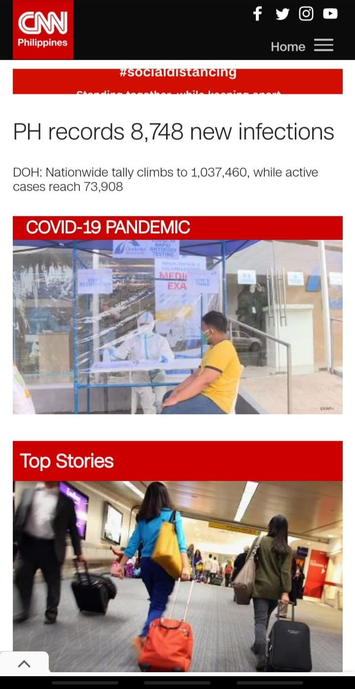
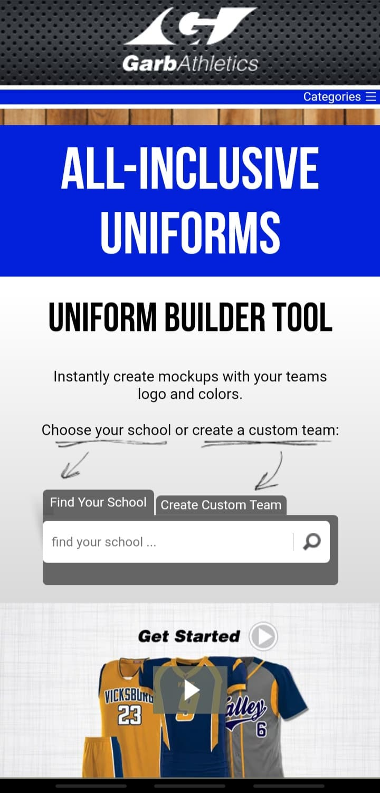

Contrast
Philippine Airlines
philippineairlines.comThe designer implemented the principle of contrast for the airline’s website. From the colors, the white typeface standing clearly on the blue background. Conversely, the dark font also standing out on the white background of the main section of the page. Contrast in colors makes the audience easily read the message of the page.
Different sizes of the font contrast with each other. This will make the user recognize sections of the website immediately. However, the designer only uses a sans-serif font which is not contrasting, but most of the websites are designed that way.
Alignment
CNN Philippines
cnnphilippines.com All you can see with the CNN Philippines’ website is the elements of the page are perfectly aligned. It makes the design more clean and organized. The logo, headings, and the body type are all left aligned.
On the main section, the items are both left and right aligned (justified content). The padding on both sides are equal. Since it is a news website, the audience will view the items base in thier order, making the hottest or most important news on top.
Visual Hierarchy
Garb Athletics
garbathletics.com Elements on websites which are the same type are set with equal sizes and shapes. Garb Athletics exemplified how hierarchy of the items control the vision of their audience by setting the elements on various sizes. The tool to create customize uniform is the largest item on the page. Second, the video showing examples of their products. Third, the text that says, “All-Inclusive Uniforms”. Fourth, the logo of the company. Fifth, the category or menu bar to view more options.
Depending how big size of the item, you can direct the users where to point their attention using the visual hierarchy principle.